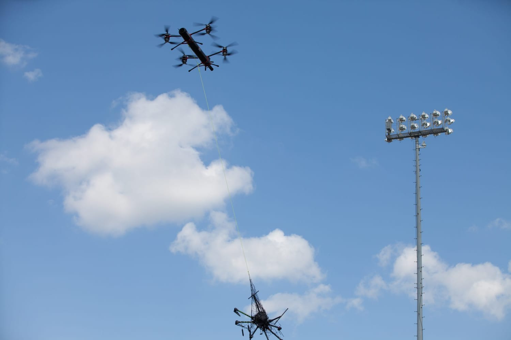
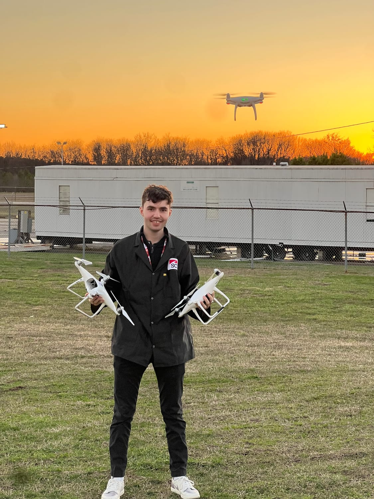
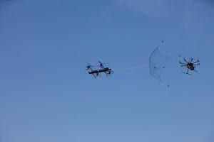

SCI Technology · Co-op
AeroGuard counter-drone system
A fully autonomous system that rapidly detects and neutralizes aerial threats.
Problem
A counter-drone system only works if its hardware is designed, built, and refined to hold up in the field.
What I did
As a co-op on the AeroGuard team, I worked across the hardware — design and analysis, fabrication and integration, and hands-on iteration. A lot of the detail stays in-house, so this one is kept high-level.
At a glance
- 1 yrfull-year co-op · 3 semesters
- Hardwaredesign → build → integrate
Gallery


